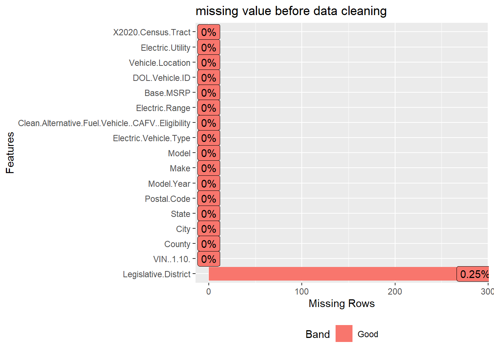
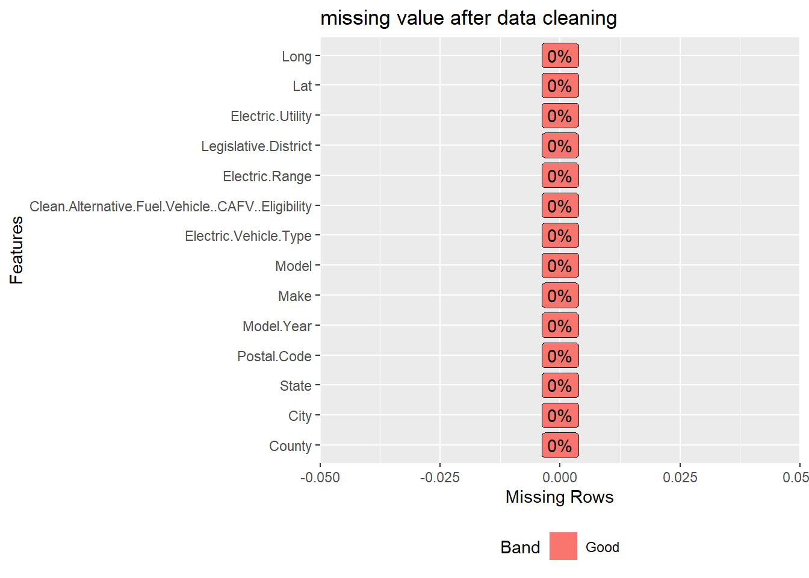

Chapter 3 Data
Write before everything else: Washington State Updated this data set at December 8, 2022, Hence the row number and the Column’s missing value condition is totally different between this Section and the proposal Section.
3.1 Sources
Link to the orginal Data set
Data Owner :
Washington State Department of Licensing
Data Collector : Washington State Department of Licensing
Data Collect Pattern : Data are been collect during the registration of electric Vehicle in Washington State
Data Accessibility : Everyone, through ‘data.wa.gov/’, just click ‘Export’ then click ‘CSV’
Data Credibility : Highly Credible because it collects by a government agency. What’s more, the Data do not go through any modification after collection.
Basic Information about the data set:
Number of rows: 112634
Number of Columns: 17
Each row represents an Electric car record, and each column represents a detail of this car.
Why our team chose this Data Set:
1. High Credibility: the most important reason our team chose this data set is because of the high credibility of this data set. This data set is directly collected by the government and posted on the government website. Hence, it is much more credible than other datasets(like some datasets from Kaggle)
2. Clear Description: Each column in this dataset has a clear description telling the user about what this column stands for, which is super convenient for our team to analyze it
3. Large Quantity of Data: this dataset has more than 110000 records, which can avoid some bias in our team’s conclusion.
4. Easy to Access: if anyone wants to repeat our team’s analysis, they don’t need to spend time or money on collecting data. Everyone can easily access the data through ‘data.wa.gov/’.
Problem. Missing Value : Three columns have missing values, with two types of missing values.
Columns with missing value: Legislative.District, Electric Range, and Base MSRP
Legislative.District: this column has N/A in columns. More details are shown in Section 3.3
Electric Range: this column use ‘0’ to represent missing values. Missing value in this column has special meanings. More details are shown in Section 3.2 and Section 4.4
Base MSRP: this column use ‘0’ to represent missing values. A large portion of the value is missing. More details are shown in Section 3.2
Update Frequency: Our team is monitoring the data update of this dataset and found out that the newest update is on December 8, 2022. The time of latest update before the newest update is on October 14, 2022. (the data our team used to write the proposal) Hence, our team infers that the frequency of the update for this data set is 2 months.
Column Meaning & Variable Type Details:
Vin: 10-character ID of each electric Vehicle in Washington State. (Data Type: Text, Variable Type: Nominal Categorical Variable)
Country:The country where the vehicle owner resides. (Data Type: Text, Variable Type: Nominal Categorical Variable)
City: The country where the vehicle owner resides. (Data Type: Text, Variable Type: Nominal Categorical Variable)
State: The State where the vehicle owner resides. (Data Type: Text, Variable Type: Nominal Categorical Variable)
Postal Code: The 5-digit zip code where the vehicle owner resides. (Data Type: Text, Variable Type: Nominal Categorical Variable)
Model Year: The model year of the electric vehicle (Data Type: Text, Variable Type: Discrete Ordinal Categorical Variable)
Make: The manufacturer of the vehicle. (Data Type: Text, Variable Type: Nominal Categorical Variable)
Model: The model of the Vehicle (Data Type: Text, Variable Type: Nominal Categorical Variable)
Electric Vehicle Type: The type of the electric vehicle, all-electric or plug-in hybrid. (Data Type: Text, Variable Type: Nominal Categorical Variable)
Clean Alternative Fuel Vehicle Eligibility: whether the vehicle is eligible for the ‘Clean Alternative Fuel Vehicle’ (Data Type: Text, Variable Type: Nominal Categorical Variable)
Electric Range: how far a vehicle can travel purely on its electric charge (Data Type: Number, Variable Type: Quantitative Variable)
Base MSRP: the lowest manufacturer’s suggested retail price (Data Type: Number, Variable Type: Quantitative Variable)
Legislative District: Specific section of Washington State where the vehicle’s owner resides. (Data Type: Number, Variable Type: Nominal Categorical Variable)
DOL Vehicle ID: Unique number of each vehicle assigned by the Washington State Department of Licensing (Data Type: Text, Variable Type: Nominal Categorical Variable)
Vehicle Location: The center of the ZIP code for the registered Vehicle (Data Type: Point, Variable Type: Quantitative Variable)
Electric Utility: this is the electric power retail service territory serving the address of the registered vehicle. (Data Type: Text, Variable Type: Nominal Categorical Variable)
2020 Census Tract: Combination of the State, country, and the census tract code (Data Type: Text, Variable Type: Nominal Categorical Variable)
3.2 Cleaning / transformation
From the missing value analysis, we observe that the missing value count in this dataset is trivial comparing to the dataset size. We choose to drop the rows that contain missing values.
Columns “VIN”, “DOL.Vehicle.ID”, “X2020.Census.Tract” are not relevant to data analysis, so we drop these columns from the original data frame.
Now our data contains 10 categorical variables: County, City, State, Postal.Code, Make, Model, Electric.Vehicle.Type, Clean.Alternative.Fuel.Vehicle..CAFV..Eligibility, Legislative.District, Electric.Utility;
4 numerical variables: Model.Year, Electric.Range, Base.MSRP, Vehicle.Location.
Since Vehicle.Location contains geographic information and it is in the format of character, we need to transform it and convert it into two numerical variables: latitude (Lat) and longitude (Long).
According to “Electric Range”, we need to modify “CAFV eligibility” (more details in Section 4.4).
The majority of the MSRP variable contains zero value, indicating data is possibly corrupted and provides not much information for our analysis. For this reason we decided to drop column Base.MSRP.
Now we have a ready-to-go dataset at hand. The cleaned dataset contains in total 15 columns and 112152 rows.
10 categorical variables: County, City, State, Postal.Code, Make, Model, Electric.Vehicle.Type, Clean.Alternative.Fuel.Vehicle..CAFV..Eligibility, Legislative.District, Electric.Utility.
5 numerical variables: Model.Year, Electric.Range, Base.MSRP, Lat, Long.
3.3 Missing value analysis
The following missing value bar chart shows the missing value of the original data set:

It turns out that only Legislative.District contains missing values. However, the proportion of missing values is very low compared to the entire data set. (less than 0.5% of the total data) Hence, We drop the rows containing the N/A value.
As a comparison, the following missing value bar chart shows the missing value after cleaning with the process in Section 3.2.

There aren’t any N/A value after the cleaning process.
Our team also modified column Clean.Alternative.Fuel.Vehicle..CAFV..Eligibility based on the missing value in Electric.Range column:
if Electric.Range is zero value, our team filled Clean.Alternative.Fuel.Vehicle..CAFV..Eligibility with “Clean Alternative Fuel Vehicle Eligible”. More details about this data-cleaning process are in Section 4.4.